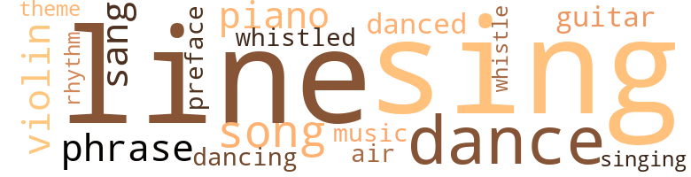
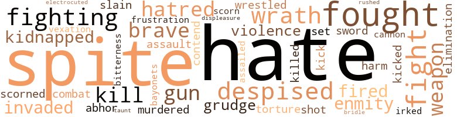
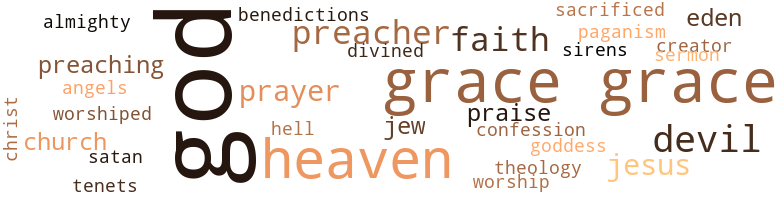

Americans in America, by Shores, Minnie T. (1966)
33 music-related terms matched in this text.
Most frequent terms in this topic: dance (3); song (3); sing (3); piano (2); line (2)
dance.n.01
Definition: an artistic form of nonverbal communication
| word | sentence |
|---|---|
| dance | " That 's it , Jerry , " - disgust showed slightly in Ralph 's face as he spoke - " our people cat too much , dance too much , laugh too much , and think too little . " |
| dance | I coaxed your sister to promise me the next dance . |
| dance | Robert did not attend the game for a physical ailment made his atten - dance impractical . |
dance.v.03
Definition: skip, leap, or move up and down or sideways
| word | sentence |
|---|---|
| danced | " Never ate so much , danced so much , laughed so much in my life . " |
| dancing | " The doctor told Mother I 'm as sound as a dollar , " Larry continued , his eyes dancing with unlimited elation . |
foreword.n.01
Definition: a short introductory essay preceding the text of a book
| word | sentence |
|---|---|
| preface | " I 'll vote before May can , " he said without a preface but with a show of pride in the advantage time gave him . |
guitar.n.01
Definition: a stringed instrument usually having six strings; played by strumming or plucking
| word | sentence |
|---|---|
| guitar | The voice of the violin , piano , and guitar , plus the gliding of dancing feet , the gay laughter and merry conver - sation of the assembled young people about summed up the activities of the youthful friends who had gathered for fun and frolic . |
music.n.01
Definition: an artistic form of auditory communication incorporating instrumental or vocal tones in a structured and continuous manner
| word | sentence |
|---|---|
| music | In the military we have Col. Charles Young and Hannibal , for statesmen we have L'ouverture and Frederick Douglass , for wise alert women we have Harriet Taubman , in music we have Dorothy Manor , in athletics we have Althea Gibson , Dunbar for our poet , they have their Edison we have our Carver - " Ralph : " Stop ! |
phrase.n.02
Definition: a short musical passage
| word | sentence |
|---|---|
| phrase | Thus , the resurrection of the ancient long-dead color line incensed the blacks and for revenge they coined the phrase , ' Poor white trash ' for the manumitted Caucasians . |
| phrases | The phrases he had mentally stored up for aids were routed from his memory . |
piano.n.01
Definition: a keyboard instrument that is played by depressing keys that cause hammers to strike tuned strings and produce sounds
| word | sentence |
|---|---|
| piano | The voice of the violin , piano , and guitar , plus the gliding of dancing feet , the gay laughter and merry conver - sation of the assembled young people about summed up the activities of the youthful friends who had gathered for fun and frolic . |
| piano | He whistled , he sang , he played Wait for the Wagon on his violin , and with his index finger drummed out Happy birthday to you on the piano . |
rhythm.n.04
Definition: the arrangement of spoken words alternating stressed and unstressed elements
| word | sentence |
|---|---|
| rhythm | She was fascinated by the rhythm in the ascent and descent of his feet as he lifted them high exposing the full length of his shoes from heel to toe and brought them again to the pavement with a firmness that did not let him reel . |
sing.v.02
Definition: produce tones with the voice
| word | sentence |
|---|---|
| sang | The four winds sang together as they kissed the lovely creation fresh from the Creator 's hand , and the waters to the left of her leaped in ecstasy and the waters to the right of her shouted for joy . |
| sang | He whistled , he sang , he played Wait for the Wagon on his violin , and with his index finger drummed out Happy birthday to you on the piano . |
| sing | But no matter how unpleasant the inhalations remain , we sing , and sing , and sing . |
| sing | But no matter how unpleasant the inhalations remain , we sing , and sing , and sing . |
| sing | But no matter how unpleasant the inhalations remain , we sing , and sing , and sing . |
singing.n.01
Definition: the act of singing vocal music
| word | sentence |
|---|---|
| singing | Even in those lonely nights of sorrow when thousands of our fellow citizens , leaping and yelling exultingly , follow after a lone victim being dragged to his pyre we never hang our harps for Hope abides with us and Faith keeps our souls singing , ' Ven - geance is God 's , He will repay , and they that wait upon Him shall not be ashamed . ' |
song.n.01
Definition: a short musical composition with words
| word | sentence |
|---|---|
| song | Her song , America the Beautiful , would be a most appropriate National Anthem , I think . |
| song | It is free from sickening flatteries , palpable lies , fulsome praise - a song that notes all virtues we possess and prays sincerely for greater perfection . |
| song | The gift of song is our heritage . |
theme.n.03
Definition: (music) melodic subject of a musical composition
| word | sentence |
|---|---|
| theme | With a smile they reverted to the theme that burned in their hearts like a golden lamp radiating light through - out their being . |
tune.n.01
Definition: a succession of notes forming a distinctive sequence
| word | sentence |
|---|---|
| line | She can only live by turning back to God and letting her fundamental principles be her line of actiori daily . " |
| line | But let us get back on our main line . |
| air | I shall start this by air mail special . |
| lines | She read between his lines and inly sighed . |
| lines | The college paper carried a few tame lines about Ralph Con - way 's Heroic Feat . |
violin.n.01
Definition: bowed stringed instrument that is the highest member of the violin family; this instrument has four strings and a hollow body and an unfretted fingerboard and is played with a bow
| word | sentence |
|---|---|
| violin | The voice of the violin , piano , and guitar , plus the gliding of dancing feet , the gay laughter and merry conver - sation of the assembled young people about summed up the activities of the youthful friends who had gathered for fun and frolic . |
| violin | He whistled , he sang , he played Wait for the Wagon on his violin , and with his index finger drummed out Happy birthday to you on the piano . |
whistle.v.01
Definition: make whistling sounds
| word | sentence |
|---|---|
| whistled | He whistled , he sang , he played Wait for the Wagon on his violin , and with his index finger drummed out Happy birthday to you on the piano . |
| whistle | " I hope you have not paid too much for your whistle . |
whistle.v.05
Definition: make a whining, ringing, or whistling sound
| word | sentence |
|---|---|
| sings | ' He sings to the wide world and she to her nest ' is his policy . |
106 violence-related terms matched in this text.
Most frequent terms in this topic: hate (13); spite (10); fought (8); fight (5); fighting (4)
abhor.v.01
Definition: find repugnant
| word | sentence |
|---|---|
| abhor | " I can appreciate fact , however bitter , " Ralph assured him , " but lies I abhor , no matter how sweet they be . " |
annoyance.n.02
Definition: anger produced by some annoying irritation
| word | sentence |
|---|---|
| vexation | Ralph had mixed emotions of vexation and pity . |
attack.v.01
Definition: launch an attack or assault on; begin hostilities or start warfare with
| word | sentence |
|---|---|
| assailed | He believed it was his duty to defend the integrity of the white race whenever it was assailed , however subtly . |
battle.v.01
Definition: battle or contend against in or as if in a battle
| word | sentence |
|---|---|
| combat | Never look for trouble , but if it strikes you combat it with so formidable intrepidity that it will never show its face again . " |
bayonet.n.01
Definition: a knife that can be fixed to the end of a rifle and used as a weapon
| word | sentence |
|---|---|
| bayonets | The bayonets and stern faces of the soldiers kept their conduct from expanding into violence . |
bridle.v.01
Definition: anger or take offense
| word | sentence |
|---|---|
| bridle | " I guess you 'll bridle your tongues now . |
cannon.n.04
Definition: heavy automatic gun fired from an airplane
| word | sentence |
|---|---|
| cannon | He returned , fired a cannon that shattered the chains off four million people . |
contemn.v.01
Definition: look down on with disdain
| word | sentence |
|---|---|
| despised | It was well that Jerry did not try to analyze the look for it was full of pity and in that hour Jerry despised pity . |
| despised | We are still slaves - base , despised slaves . |
| scorned | He scorned such armaments in his fight for oratorical supremacy . |
| despised | But he despised acting like one afraid . |
| despised | Grace no longer remembered that she was one of a despised group . |
| scorn | " I honor the traditions of my people - " " The traditions of your people , " she interrupted with a tincture of scorn in her soft voice . |
contend.v.06
Definition: be engaged in a fight; carry on a fight
| word | sentence |
|---|---|
| contend | Men who advocate supremacy and contend for it create hell on earth . |
displeasure.n.01
Definition: the feeling of being displeased or annoyed or dissatisfied with someone or something
| word | sentence |
|---|---|
| displeasure | His face was flushed , his eyes were filled with extreme displeasure . |
electrocute.v.02
Definition: kill by electrocution, as in the electric chair
| word | sentence |
|---|---|
| electrocuted | And , if she were judge and jury , the publishers of that stuff which lawmakers say must not be sold over the counter would be electrocuted . " |
elimination.n.05
Definition: the murder of a competitor
| word | sentence |
|---|---|
| elimination | Eventually the elimination process trimmed the number down to three . |
fight.n.02
Definition: the act of fighting; any contest or struggle
| word | sentence |
|---|---|
| fighting | Larry locked securely within his brain two facts : At eighteen he would be old enough to join the fighting forces , to be in the army . |
| fighting | I 'll die fighting . |
fight.n.05
Definition: a boxing or wrestling match
| word | sentence |
|---|---|
| fight | What a fight we 'll make . " |
| fight | He scorned such armaments in his fight for oratorical supremacy . |
| fight | She flung herself down on a sofa and shot a reprimand - ing glance at two other nurses who were engaged in fight - ing a " cold " war over politics . |
fight.v.02
Definition: fight against or resist strongly
| word | sentence |
|---|---|
| fought | Hear some more : " About a hundred years ago a war was fought to set us free . |
| fought | " My ancestors fought under the stars and bars , my grandfather died in the Spanish-American War , in spite of a Negro 's effort to save him . |
| fought | " You have millions loyal to the principles to which you were dedicated and for which our fathers fought and died . |
| fought | They sat there and reconnoitered the social field where they had fought battle after battle and won . |
| fighting | " I do n't believe he is grown , Larry , perhaps old enough to join our fighting forces - about eighteen , I should guess . |
| fight | There was the battle - field , there was the enemy he must fight . |
| fight | He would not fight with carnal weapons but with the sword of Truth , the Word of God . |
| fighting | We are still fighting for liberty and shall not stop until our cause is won . |
| fought | Angels fought for supremacy and , for that reason were cast into hell . |
| fought | His brother fought and ran away . |
| fought | In the Civil War when the pro-slavery forces and the anti-slavery forces fought against each other there were a large number of anti-slavery folks that wanted to divide this state as Virginia divided ; a large number of Missourian anti-slavery citizens wanted to divide Missouri likewise . |
| fought | " Grandmother , why was the Civil War fought ? " |
frustration.n.03
Definition: a feeling of annoyance at being hindered or criticized
| word | sentence |
|---|---|
| frustration | For sudden frustration she made no attempt to answer him . |
gall.v.02
Definition: irritate or vex
| word | sentence |
|---|---|
| irked | Ralph was irked by the qualifying adjective . |
grudge.n.01
Definition: a resentment strong enough to justify retaliation
| word | sentence |
|---|---|
| grudge | " We stand before you with no gun in our hands and no grudge in our hearts . |
| grudge | " Then you 'll feed fat the grudge you bear him , " James offered for a complement of Ralph 's unexpressed thought . |
gun.n.01
Definition: a weapon that discharges a missile at high velocity (especially from a metal tube or barrel)
| word | sentence |
|---|---|
| guns | On the inside she has this that I copied here : ' There 'll be guns to shoot and horns to toot And hobby horses to ride There 'll be sand piles to play in and wee tents to stay in And pretty toboggan slides . ' " |
| guns | Have you turned the guns of your ani - mosity in the right direction ? |
| gun | " We stand before you with no gun in our hands and no grudge in our hearts . |
harm.v.01
Definition: cause or do harm to
| word | sentence |
|---|---|
| harm | But God knows I did not mean to harm you , and when I am twenty - one I shall return to you and where I am you shall be also . |
hate.n.01
Definition: the emotion of intense dislike; a feeling of dislike so strong that it demands action
| word | sentence |
|---|---|
| hatred | They developed hatred for one another . |
| hate | We-all hate niggers . |
| hatred | " Paul , just rounding out his twenty-third year , stirred up hatred among the whites be - cause he showed determination to vote and urged other blacks to do the same . |
| hate | " I know , precious child , that love will melt away the iron curtain of hate that divides man from man . |
| hatred | His innate hatred flared up like oil on fire . |
hate.v.01
Definition: dislike intensely; feel antipathy or aversion towards
| word | sentence |
|---|---|
| hate | I hate them , Ralph , no use in saying I do n't . " |
| hate | While he was still wondering , Jerry blurted out , " I hate them , Ralph , I tell you I do . " |
| hate | " Yes , I hate them . |
| hate | I hate white folks , Ralph . |
| hate | - I hate white folks . |
| hate | " We are really taught to hate you people , " resumed Louis , " and learn it before we do the Lord 's prayer . |
| hate | And I hate them , Ralph . |
| hate | If you do n't I 'll hate you the rest of my life . " |
| hate | Immature , though he had been , he had gathered convictions that told him many people might hate him for the principles he advocated . |
| hate | Our parents taught us to hate 'em , and nothing can make me any dif - ferent . |
| Hate | Hate only stirs up strife and fills the heart of man with beastial passions which bind civilization on a toboggan slide bound for death and destruction . |
| hate | " I hate to leave you , " Grace sorrowfully admitted , her moods chasing each other like sunshine and cloud . |
hostility.n.02
Definition: a state of deep-seated ill-will
| word | sentence |
|---|---|
| Enmity | Enmity created division among them . |
| enmity | " We got along nicely with colored folks but the big whites were always trying to keep enmity between us . |
invade.v.01
Definition: march aggressively into another's territory by military force for the purposes of conquest and occupation
| word | sentence |
|---|---|
| invaded | The white man - male and female - invaded their territory and named them In - dians . |
| invaded | His antics seemed to be of positive interest to a pretty squirrel that , at a prudent distance from him , sat with his tail curled over his back and watched the two-legged crea - turp that invaded animal territory . |
kick_back.v.02
Definition: spring back, as from a forceful thrust
| word | sentence |
|---|---|
| kicked | " Turn , America , turn , " he said aloud as he kicked off his shoes and prepared for bed . |
| kick | I have a sister and but for this lame foot I 'd kick the daylights out of you . " |
kidnap.v.01
Definition: take away to an undisclosed location against their will and usually in order to extract a ransom
| word | sentence |
|---|---|
| kidnapped | Almost simultaneously they freed the white slaves ( for whites had been kidnapped in foreign countries brought into America and made chattel slaves along with blacks who had been captured in Africa and transported to America for slaves ) . |
| kidnapped | But it is a historic fact that whites were kidnapped in their native land , brought into this country and auctioned off into chattel slavery . |
kill.v.10
Definition: cause the death of, without intention
| word | sentence |
|---|---|
| kill | Man , I 've shined up my jalopy , gathered up six of us boys , and , dressed to kill we 'll be there to see and hear you . |
| killed | " His own carelessness killed him , " said the coroners . |
| kill | " And years and years after Moses was dead Jesus was born and He was carried into Africa for safety when a wicked king wanted to kill Him . |
| kill | He had run over a white boy with intent to kill . |
malice.n.01
Definition: feeling a need to see others suffer
| word | sentence |
|---|---|
| spite | Betty squeezed her question through in spite of Lucy 's excitedly spoken words . |
| spite | " My ancestors fought under the stars and bars , my grandfather died in the Spanish-American War , in spite of a Negro 's effort to save him . |
| spite | Pesistent , irritated Jerry pushed it on in spite of Ralph 's desire to sign off . |
| spite | Ralph : " I do n't feel sure of myself in spite of your confidence . |
| spite | " Only one gift today , Larry , " she said , trembling in spite of herself . |
| spite | Well , we-all like our way of life and niggers can do only as we let them in spite of every Frances Billington that is or shall be . |
| spite | " That 's right , child , " said her grandmother , " Smile in spite of sin and Satan . " |
| spite | " But let us try to remember there are some beautiful spots in southern life in spite of the horrible many that make us so wretched . |
| spite | In spite of his dislodged tooth , his cut lip , and spots of blood on his shirt , Larry answered the inquiry with a shake of his head and a faintly grunted , " Uh , uh . " |
| spite | " Yes , Betty , ' The ides of March has come ' and in spite of reason , you are glad . |
murder.v.01
Definition: kill intentionally and with premeditation
| word | sentence |
|---|---|
| murdered | He robbed them of their lands , polluted their homes , murdered many and drove the remnant into concentration camps called reservations from which they had no escape . |
| slain | Who , in an efifort to make blacks free , suffered themselves to be slain from ambush , dragged to death , and in other ways murdered ? |
open_fire.v.01
Definition: start firing a weapon
| word | sentence |
|---|---|
| fired | Like any other coward we fired from ambush . |
| fired | He returned , fired a cannon that shattered the chains off four million people . |
rape.n.03
Definition: the crime of forcing a woman to submit to sexual intercourse against her will
| word | sentence |
|---|---|
| assault | That dern type - writer made the assault but I got the chair . " |
resentment.n.01
Definition: a feeling of deep and bitter anger and ill-will
| word | sentence |
|---|---|
| bitterness | " Now , now , dear , give bitterness no quarter , " Mrs. Nimrod gently chided . |
rush.v.02
Definition: attack suddenly
| word | sentence |
|---|---|
| rushed | James and Edward rushed upon him and hotly in - quired , " Why did n't you let that old white boy drown ? " |
shoot.v.02
Definition: kill by firing a missile
| word | sentence |
|---|---|
| shot | For over an hour we shot pro 's and con 's at each other . |
sic.v.01
Definition: urge to attack someone
| word | sentence |
|---|---|
| set | Mrs. Bartlett , whose heart was set on weaning him from May , wondered but she did not despair . |
sword.n.01
Definition: a cutting or thrusting weapon that has a long metal blade and a hilt with a hand guard
| word | sentence |
|---|---|
| sword | He would not fight with carnal weapons but with the sword of Truth , the Word of God . |
torment.v.01
Definition: torment emotionally or mentally
| word | sentence |
|---|---|
| torture | " Then no man will ever need to suffer such torture as I endured for fear you - you - " " I have made my decision , Father , and you need never fear again . |
twit.n.02
Definition: aggravation by deriding or mocking or criticizing
| word | sentence |
|---|---|
| taunt | The taunt in Lucy 's voice made bad matters worse . |
violence.n.01
Definition: an act of aggression (as one against a person who resists)
| word | sentence |
|---|---|
| violence | The bayonets and stern faces of the soldiers kept their conduct from expanding into violence . |
| violence | The effect of his violence was the severe pain in his foot and the damage done his faithful steel horse . |
weapon.n.01
Definition: any instrument or instrumentality used in fighting or hunting
| word | sentence |
|---|---|
| weapons | He would not fight with carnal weapons but with the sword of Truth , the Word of God . |
| weapon | His was a stronger weapon . |
| weapon | The ballot is the strongest weapon of defense Americans have , " Pauline continued . |
weather.v.01
Definition: face and withstand with courage
| word | sentence |
|---|---|
| brave | He was educated by the Africans and trained to be the brave wise leader of a great people - the Jews . |
| brave | " Why speak so harshly of him ? " she was brave enough to ask . |
| brave | His irritation distressed her but she was brave enough to say , " I will if you will promise me one thing . " |
wrath.n.01
Definition: intense anger (usually on an epic scale)
| word | sentence |
|---|---|
| wrath | His wrath drove us from our Eden . |
| wrath | We must beware lest we cross the line be - tween His mercy and His wrath . |
| wrath | Ralph 's cup of wrath ran over , but with remarkable self - possession and dignity he told James : " I am not interested in your fellow students ' complexion , I do not make a blanket criticism against any group . |
| Wrath | Wrath and caution never make a well-working team and soon the irate youth on the bicycle crashed into the anxious boy on foot . |
wrestle.v.01
Definition: combat to overcome an opposing tendency or force
| word | sentence |
|---|---|
| wrestled | Two thoughts had wrestled for his acceptance and he had found it difficult to choose the one conscience said was right . |
171 religion-related terms matched in this text.
Most frequent terms in this topic: God (86); Grace (25); heaven (10); devil (4); Jesus (3)
blessing.n.05
Definition: the act of praying for divine protection
| word | sentence |
|---|---|
| benedictions | With character - istic dignity Ralph received their congratulatory hand - shakes , benedictions and goodbyes . |
church.n.02
Definition: a place for public (especially Christian) worship
| word | sentence |
|---|---|
| church | Unity must obsess us in the school , at the fireside , in the church - everywhere , or we ca n't make it through another hundred years . |
| church | Presently two black boys he had met at the church which he had joined under watchful care called to him . |
confession.n.05
Definition: the document that spells out the belief system of a given church (especially the Reformation churches of the 16th century)
| word | sentence |
|---|---|
| confession | In the light of Larry 's confession she saw another woman in the place she had desired for herself . |
divine.v.01
Definition: perceive intuitively or through some inexplicable perceptive powers
| word | sentence |
|---|---|
| divined | Frances divined his thoughts but was undaunted . |
dogma.n.01
Definition: a religious doctrine that is proclaimed as true without proof
| word | sentence |
|---|---|
| tenets | In some instances his tenets ran parallel with Robert 's , in some they were diametrically opposite . |
eden.n.01
Definition: any place of complete bliss and delight and peace
| word | sentence |
|---|---|
| heaven | We 'd have a heaven on earth . |
| heavens | He also set the stars in order to light her path across the heavens . |
| heaven | Go to heaven ! " |
| heaven | " What words , for heaven 's sake . " |
| heaven | " All the gals have coming-out parties and , heaven knows , they have never been in . " |
| Eden | " And for the wedding ceremony nothing could be more appropriate than your ballroom that you have transformed into a modern Garden of Eden . |
| heaven | I shall go to God in heaven . |
| heaven | Oh , for a while we had heaven on earth . |
| Eden | His wrath drove us from our Eden . |
| Heavens | " Heavens above ! " exclaimed one girl whose arm was locked in Jefflee 's . |
| heaven | It seemed to Grace that a voice from heaven spoke to her mourning soul and calmed her troubled mind . |
| heavens | They looked out unto the per - petual purple hills in the distance , at the uncultivated low - lands , at the fields of ripe cotton that , waiting to be harvested , made a milky way across the terrestrial heavens . |
| heaven | Of course , Tennessee is no heaven on earth but a change in misery does sometimes affect us as if we had better . |
| heaven | We 'd have a heaven on earth , for the Gospel is the power of God - " " By golly ! " he cried , " You are at it again . |
| heaven | She likened modern scientists unto their ancient prede - cessors who endeavored to build a tower that would grant them a man-devised plan for entering heaven . |
god.n.03
Definition: a man of such superior qualities that he seems like a deity to other people
| word | sentence |
|---|---|
| God | " Spread light among the people and mend our Govern - ment 's ' ev ' ry flaw ' before God agrees with the speaker you quote and wipes her out of existence . " |
| God | America must turn back to God and be true to her fundamental principles . |
| God | God made us one and commands us to dwell to - gether in brotherly love . " |
| God | God counted on America as an asylum for the oppressed . |
| God | It was the fiat of Almighty God . |
| God | She can only live by turning back to God and letting her fundamental principles be her line of actiori daily . " |
| God | " Millions more Daniels are needed to save America from the annihilation of which God warns the nations that forget Him . " |
| God | They were sure remembering God meant more than build - ing magnificent edifices or holding religious ceremonies . |
| God | They knew that all who keep the traditions of men rather than the commandments of God have forgotten God . |
| God | They knew that all who keep the traditions of men rather than the commandments of God have forgotten God . |
| God | " A man is a man ; God made him and all descended from Noah , and Noah descended from Adam . |
| God | And some day I 'll rule out forever such tom - foolery as long heads and brain weight and all nations shall come to know that God made man and not races . " |
| God | God lives . " |
| God | Then he sat in a chair near the door and , crossing his knees , abandoned himself to thinking : " Why did God ever let America come into existence ? |
| God | God never makes anything with - out purpose . |
| God | God made man - male and female - for His own glory . |
| God | Man must glorify God through obedience . |
| God | God gave man an initial test in a place now called Asia . |
| God | And , today it is only by obedience that man can or does glorify God . |
| God | God was sorely displeased . |
| God | God wanted a people that would delight itself in Him . |
| God | When Asia had failed , God tested Africa . |
| God | So , God called on Europe . |
| God | " And God said , ' Let us make a new nation , a nation that will be one people and dwell together in brotherly love , a nation that will be a sanctuary for all who are oppressed , a nation that will be like a City of Refuge for all who flee from Despotism . |
| God | If they keep my way , I will be their God and they shall be my people . ' |
| God | " And God divided the seas - the turbulent from the placid - rolled back the waters like a counterpane thereby uncovering a vast area of land which should be called America . |
| God | And God surveyed the work of His hands and said of the land that should be called America , ' very good . ' |
| God | By God 's mysterious plan they were borne across the turbulent Atlantic . |
| God | In obedience to God 's command they multiplied but they broke other laws . |
| God | God did not permit them to form a new government until they had sworn allegiance to the eternal aphorism that all men are created equal . |
| God | " For eighty years God tolerated the foul stench of in - humanity coated with loud professions of liberty , justice , and sweet piety . |
| God | Seem - ingly , some Americans believe the arm of God is shortened so that He can not save , some believe He has forgotten to punish them . |
| God | God is the same today as yesterday . |
| God | Our zealous forefather 's shout of Liberty or death was but the echo of changeless God 's unchanging fiat : Repent or perish . |
| God | Turn back to God . " |
| God | Turn back to God . |
| God | " God 's power keeps me . " |
| God | " God 's power keeps me . " |
| God | God gave you brains . |
| God | " Unless God stops me . " |
| God | Well , if I had beat that bigot then , I might not be able to say what I say now , - Thank God I am alive . " |
| God | The rest is in God 's hands . " |
| God | I shall go to God in heaven . |
| God | But God knows I did not mean to harm you , and when I am twenty - one I shall return to you and where I am you shall be also . |
| God | God knows I would have rather died than stain your spotless char - acter . |
| God | God made man . |
| God | Your people shall be my people and your God my God . |
| God | He must study issues at all times and endeavor to glorify God and insure the survival of America . |
| God | God is the Trinity , Father , Son and Holy Spirit - three in one . |
| God | " I 'll not be a preacher , " he sighed , " but America must turn back to God if she would be saved . |
| God | " We - my wife and I , for God never joins together two of contrary mind and feeling - will dedicate our lives to the reformation of America . |
| God | God has been very patient with us through eighty years and a hundred more . |
| God | God bids us deal justly with all men . |
| God | We must repent of our crimes against many and get back to God or reap the horrible fate of other na - tions that have forgotten Him . |
| God | He thought on his father 's noble stand and audibly repeated it , " Thy people shall be my people and thy God my God . " |
| God | My faith in the American people and God convinces me that the saving ' ten right - eous ' shall be found , and America live on . " |
| God | And God gave man dominion over all that He made , and " The Divine right to rule is our heritage . " |
| God | His ora - tion pleased and he was very liberally rewarded when , in conclusion , he said , " The determination to be true to God and keep our country united and free is our heritage . " |
| God | We have suffered and are suffering , only God knows how much , but we have not despaired . |
| God | We move among you with bloodied but unbowed head , and , high as the vaulted skies we shout the glorious aphorism which God inspired our forefathers to write : All men are created equal . |
| God | Even in those lonely nights of sorrow when thousands of our fellow citizens , leaping and yelling exultingly , follow after a lone victim being dragged to his pyre we never hang our harps for Hope abides with us and Faith keeps our souls singing , ' Ven - geance is God 's , He will repay , and they that wait upon Him shall not be ashamed . ' |
| God | Wc love you and we forgive you - we forgive you as eternal God forgives . " |
| God | " For the glory of God and survival of America , " Robert added and strode away before Ralph could attempt an answer . |
| God | In that talk she had told him that , " For the glory of God Americans must be one people , God made man a whole . |
| God | In that talk she had told him that , " For the glory of God Americans must be one people , God made man a whole . |
| God | With God all things are possible . |
| God | The crystal river of truth and love flowing from the throne of God to nourish the heart and mind of Americans like Harriet Beecher Stowe , Frederick Douglass , Lowell , and Chase , has not run dry . |
| God | God will be with us . |
| God | Both May and Larry were very solemn but their spirits were strong through their faith in God and their fellow - men . |
| God | He wanted everybody to be free like God created them . |
| God | " I hope to God it does , " he added . |
| God | " Only God knows , but I was game enough to tell him , ' Frankie was not offended . ' |
| God | " I 'll beat that trash if it 's my last act on God 's green earth . " |
| God | You , born and brought up in God 's country , used to inte - gration all your life . |
| God | Mrs. Nimrod , realizing that grief was gnawing too deep for words to be effectual , simply stroked the young woman 's head until , on a repetition of the inquiry , she answered , " For the execution of God 's promise to break in pieces the oppressor , undo the heavy burden , and set all men at liberty . |
| God | God never fails . " |
| God | I do n't know why God suffers things to be as they are , but His ways are not our ways neither are His thoughts our thoughts . |
| God | We know God is in the shadow keeping watch . " |
| God | They still , for the most part , clung religiously to the traditions of men and ignored the commandments of God . |
| God | She did recall that she was human and God had made all mankind of one blood . |
| God | " No , no , for God is not the God of all preachers and not all preachers are of God . |
| God | " No , no , for God is not the God of all preachers and not all preachers are of God . |
| God | " No , no , for God is not the God of all preachers and not all preachers are of God . |
| God | " Promise me , Robert , that you will dedicate your life to the glory of God and the survival of America . |
| God | God can not be glorified unless men are bound together in a strong tie of brotherhood , and , unless all Americans are united , our nation can not endure . " |
| God | " I like God 's way best , " Frances said with typically Puritan simplicity . |
goddess.n.01
Definition: a female deity
| word | sentence |
|---|---|
| goddess | The Greeks so admired and adored the Africans , they chose an African princess for a model and carved their goddess of wisdom in her likeness . " |
godhead.n.01
Definition: terms referring to the Judeo-Christian God
| word | sentence |
|---|---|
| Almighty | It was the fiat of Almighty God . |
| Creator | The four winds sang together as they kissed the lovely creation fresh from the Creator 's hand , and the waters to the left of her leaped in ecstasy and the waters to the right of her shouted for joy . |
grace.n.05
Definition: (Greek mythology) one of three sisters who were the givers of beauty and charm; a favorite subject for sculptors
| word | sentence |
|---|---|
| Grace | " I published the first edition when I told Grace Nimrod . " |
| Grace | He will find Grace to be a tough customer , high strung , really believes all men are created equal , " he concluded as if he believed the saying had been culled from a mythical legend . |
| Grace | " Alice Rogers was with Grace at the time , " Ralph resumed . |
| Grace | Under guard , Grace was seated in a taxi and whisked away to her grandmother 's home on the city 's rpral fringe . |
| Grace | The room Grace entered in her grandmother 's house was unique for its decoration . |
| Grace | Grace found the pictures peculiarly appealing after her cruel reception or rejection at the formerly all-white school and the undemocratic method of her conveyance home . |
| Grace | But Grace asked herself if the current peace was less appalling than the past war . |
| Grace | And Grace 's tears burst forth in copious showers . |
| Grace | It seemed to Grace that a voice from heaven spoke to her mourning soul and calmed her troubled mind . |
| Grace | She put her arm around Grace and drew her before a window to let Nature join in supplanting misery and de - spair by peace and hope . |
| Grace | " And the law officials stood by and laughed at the ' fun ' , " Grace said . |
| Grace | Grace gave way to crying . |
| Grace | Mrs. Nimrod and Grace spent several minutes listening to the comforting voice of silent Nature . |
| Grace | Supper , as Mrs. Nimrod called the last meal of the day , was over , the dishes cleared away , and the lamps lighted , when Grace heard that she was soon to return to Ten - nessee . |
| Grace | " Oh , Grandmother , " Grace said in surprise , " you ca n't mean it . " |
| Grace | " Yet , your right hand has so offended you that you must now cut it off , " Grace said laughingly . |
| Grace | " Indeed you have been perfect in all things , " Mrs. Nim - rod replied , obviously thankful for Grace 's cheerful man - ner . |
| Grace | " Your return is the most practical thing in the world , dear , and one of these days not too far off , a Greyhound running into Tennessee will carry my little Grace along . " |
| Grace | Grace was again in her native state as quickly as the bus could convey her there . |
| Grace | At the lunch period Grace went alone into the cafeteria where many students had preceded her . |
| Grace | Grace felt that she knew why . |
| Grace | Grace had ready an explanation for that , too . |
| Grace | Grace no longer remembered that she was one of a despised group . |
| Grace | Grace 's countenance showed that her heart went with her words . |
| Grace | After the meal Grace went to her class ; Frances turned to the out-of-doors that a warm bright sunshine made very inviting . |
hell.n.01
Definition: any place of pain and turmoil
| word | sentence |
|---|---|
| hell | Men who advocate supremacy and contend for it create hell on earth . |
jesus.n.01
Definition: a teacher and prophet born in Bethlehem and active in Nazareth; his life and sermons form the basis for Christianity (circa 4 BC - AD 29)
| word | sentence |
|---|---|
| Jesus | I bet there were some decent people in the crowd that Jesus addressed as a generation of vipers . |
| Jesus | " And years and years after Moses was dead Jesus was born and He was carried into Africa for safety when a wicked king wanted to kill Him . |
| Jesus | And in all the big crowd of people the name of Jesus and the name of that African are the only names worthy of mention . " |
jew.n.01
Definition: a person belonging to the worldwide group claiming descent from Jacob (or converted to it) and connected by cultural or religious ties
| word | sentence |
|---|---|
| Jew | She was an African but Solomon , a Jew king , was wiser than she . " |
| Jews | He was educated by the Africans and trained to be the brave wise leader of a great people - the Jews . |
messiah.n.01
Definition: any expected deliverer
| word | sentence |
|---|---|
| Christ | " If America continues to build on the treacherous sands of her citizens ' white complexion her death is as certain as was Rome 's and it shall be more violent than Sodom and Gomorrah 's - for Sodom and Gomorrah Jesus had not died , to Sodom and Gomorrah the Gospel of Christ had not been preached . |
paganism.n.01
Definition: any of various religions other than Christianity or Judaism or Islamism
| word | sentence |
|---|---|
| paganism | She wandered off into a labyrinth of paganism . |
praise.n.02
Definition: offering words of homage as an act of worship
| word | sentence |
|---|---|
| praise | The whole was very impressive and won loud praise from noted critics . |
| praise | It is free from sickening flatteries , palpable lies , fulsome praise - a song that notes all virtues we possess and prays sincerely for greater perfection . |
prayer.n.01
Definition: the act of communicating with a deity (especially as a petition or in adoration or contrition or thanksgiving)
| word | sentence |
|---|---|
| prayer | " We are really taught to hate you people , " resumed Louis , " and learn it before we do the Lord 's prayer . |
| prayer | It is a prayer that should be prayed by every citizen of our coun - try in school or out . |
| Prayer | They were asked to write on Democracy , Prayer in Public Schools , and The Duty of Advanced Nations to Unde - veloped Peoples . |
preacher.n.01
Definition: someone whose occupation is preaching the gospel
| word | sentence |
|---|---|
| preacher | " I 'll not be a preacher , " he sighed , " but America must turn back to God if she would be saved . |
| preacher | " You want me to be a preacher ? " |
| preachers | " No , no , for God is not the God of all preachers and not all preachers are of God . |
| preachers | " No , no , for God is not the God of all preachers and not all preachers are of God . |
religion.n.01
Definition: a strong belief in a supernatural power or powers that control human destiny
| word | sentence |
|---|---|
| faith | My faith in the American people and God convinces me that the saving ' ten right - eous ' shall be found , and America live on . " |
| Faith | Even in those lonely nights of sorrow when thousands of our fellow citizens , leaping and yelling exultingly , follow after a lone victim being dragged to his pyre we never hang our harps for Hope abides with us and Faith keeps our souls singing , ' Ven - geance is God 's , He will repay , and they that wait upon Him shall not be ashamed . ' |
| faith | His face glowed with the light of faith that saw a clear highway beyond the wilderness and rugged way of the present , saw a placid sea after the fierce tempestuous billows were calmed . |
| faith | Both May and Larry were very solemn but their spirits were strong through their faith in God and their fellow - men . |
sacrifice.v.04
Definition: make a sacrifice of; in religious rituals
| word | sentence |
|---|---|
| sacrificed | Who sacrificed lives and money in support of the war to emancipate blacks ? |
saint.n.02
Definition: person of exceptional holiness
| word | sentence |
|---|---|
| Angels | Angels fought for supremacy and , for that reason were cast into hell . |
satan.n.01
Definition: (Judeo-Christian and Islamic religions) chief spirit of evil and adversary of God; tempter of mankind; master of Hell
| word | sentence |
|---|---|
| devil | What th ' devil is there for us to think about ? |
| devils | Trying to tell me again that not all white folks are the devils ? |
| devil | " The devil with you , boy . |
| devil | Why th ' devil did you come here ? " |
| Satan | " That 's right , child , " said her grandmother , " Smile in spite of sin and Satan . " |
| devil | Colored folks have a devil of a time in this land of the free and home of the brave . |
sermon.n.02
Definition: a moralistic rebuke
| word | sentence |
|---|---|
| preaching | " Be done with your in - fernal preaching . " |
| Preaching | " Preaching is essential to save men 's souls , " she replied quickly and emphatically . |
| sermon | " I promise , " he said , distracted , of course , but ready to promise anything that might deflect the sermon he saw headed his way . |
siren.n.01
Definition: a sea nymph (part woman and part bird) supposed to lure sailors to destruction on the rocks where the nymphs lived
| word | sentence |
|---|---|
| sirens | The distracting sound of screaming sirens said the officers were approaching . |
theology.n.02
Definition: a particular system or school of religious beliefs and teachings
| word | sentence |
|---|---|
| theology | " But before you go please tell me why in the world you changed your career from medicine to theology . " |
worship.n.01
Definition: the activity of worshipping
| word | sentence |
|---|---|
| worship | We shall endeavor to have Americans demolish the color fetich they worship and make America truly one nation , indivisible with liberty and justice for all . |
worship.v.02
Definition: show devotion to (a deity)
| word | sentence |
|---|---|
| worshiped | My mother worshiped the uni - form her grandfather wore and you ate lunch with us in my home . |